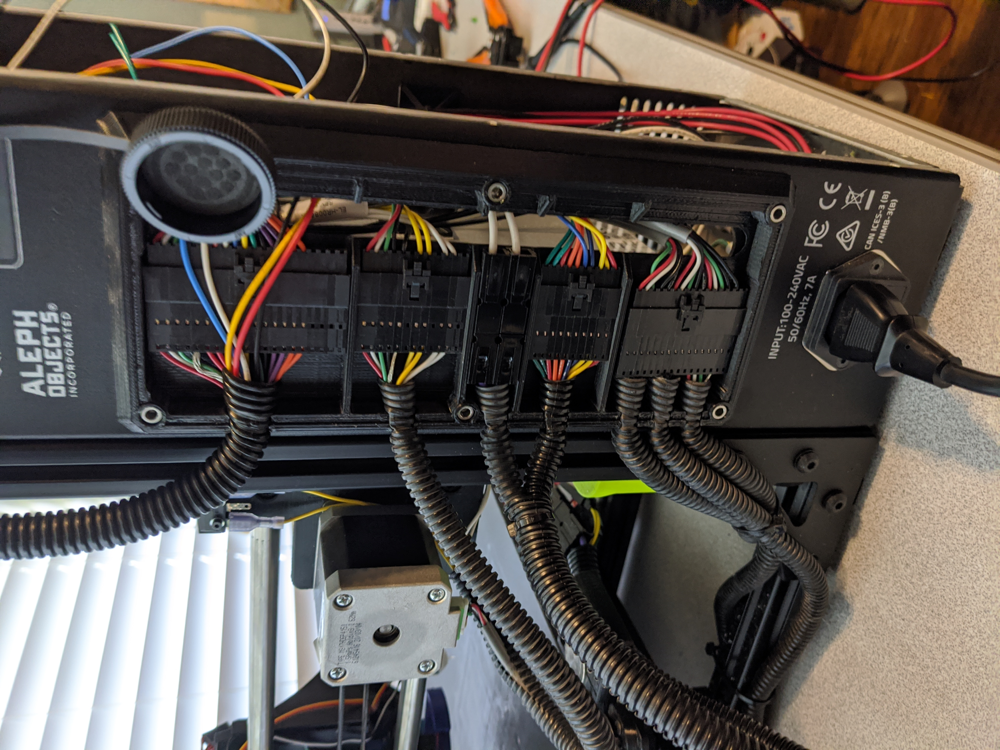
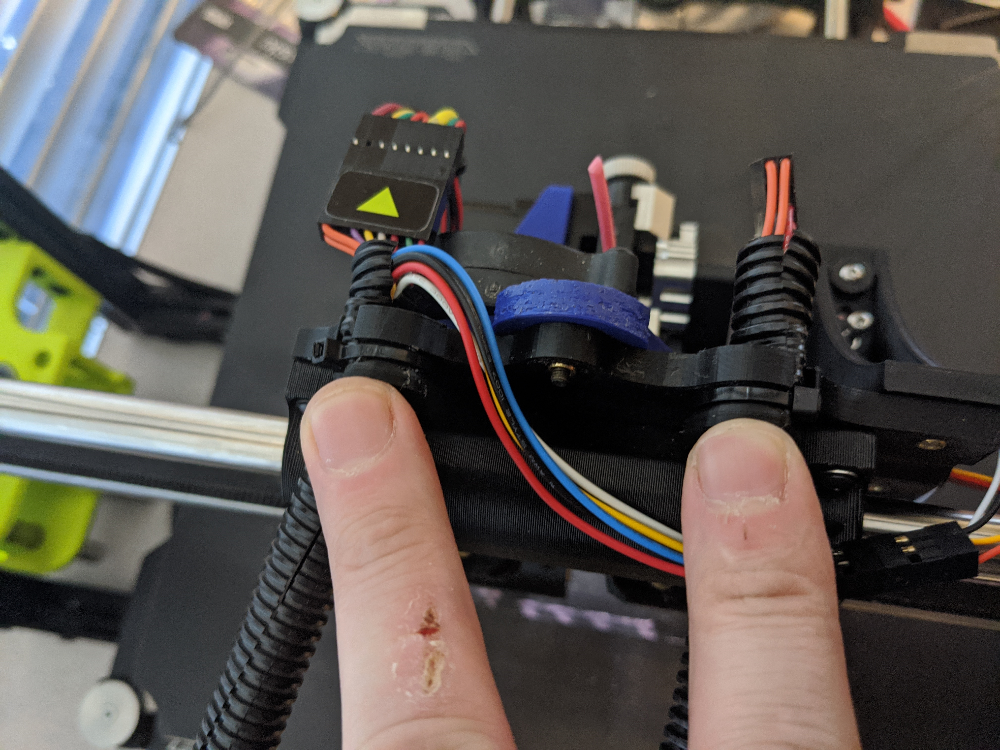

Tutorial - Taz 6 BLTouch with IT-Works 3D print heads
This tutorial will walk through the installation of a BLTouch on a TAZ6 that is using print heads from IT-Works 3D.
Parts Used
- 1x - BLTouch
- 1x - TAZ 6 Modified X Carriage
- 1x - BLTouch calibration spacer 8.3mm
- 17x - M3 Heat-Set Inserts
- 5ft - 22 gauge Black Wire
- 5ft - 22 gauge White Wire
- 5ft - 22 gauge Red Wire
- 5ft - 22 gauge Brown Wire
- 5ft - 22 gauge Orange Wire
- 2x - 26-24 AWG Heat Shrink butt splices
- 2x - M3 30mm Hex Cap Screws
- 2x - M3 10mm Screws
- 4x - M3 Self locking nut
- 2x - [2x6 Dupont connectors]
- 5x - [Male Dupont Connectors][2x6 Dupont connectors]
- Wire ties
Remove the print head from the printer

Remove the side cover from the printer

Remove the rear cover from the printer

Cut the wire ties holding the cables to the printer frame.

Cut the wire ties holding the cables to the X Carriage.

Remove the X Carriage.

Use a soldering iron and press the M3 Heat-Set Inserts into the TAZ 6 Modified X Carriage.

M851 X-62 Y-10 M500
G29 P1
[2x6 Dupont connectors]: